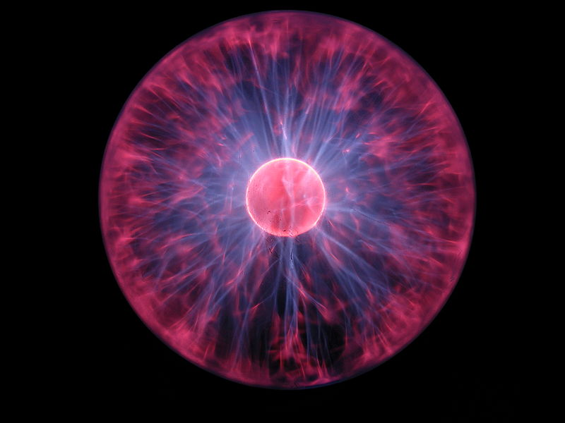

과학(科學, science)은 사물의 구조, 성질, 법칙 등을 관찰 가능한 방법으로 얻어진 체계적이고 이론적인 지식의 체계를 말한다. 좁게는 인류가 경험주의와 방법론적 자연주의에 근거하여 실험을 통해 얻어낸 자연계에 대한 지식들을 의미한다. 과학자들은 자연계에서 관찰되는 현상들을 과학적 방법에 따라 자연적인(초자연적이지 않은) 이론으로 설명하려고 시도한다.